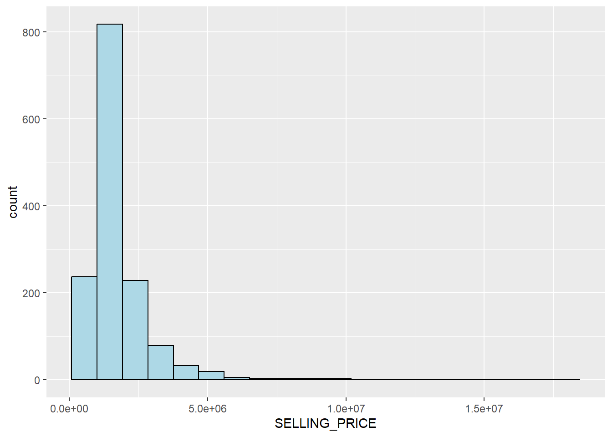
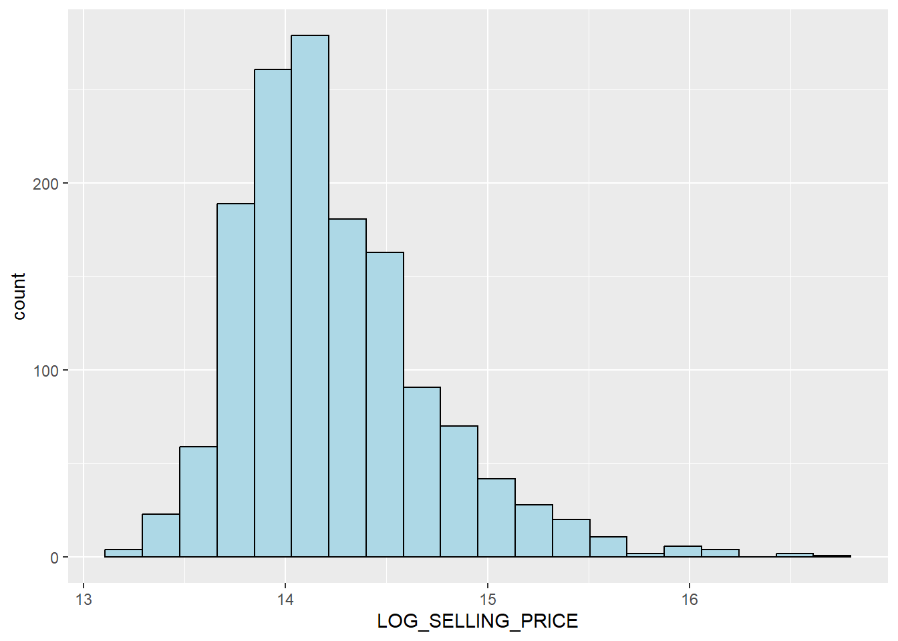
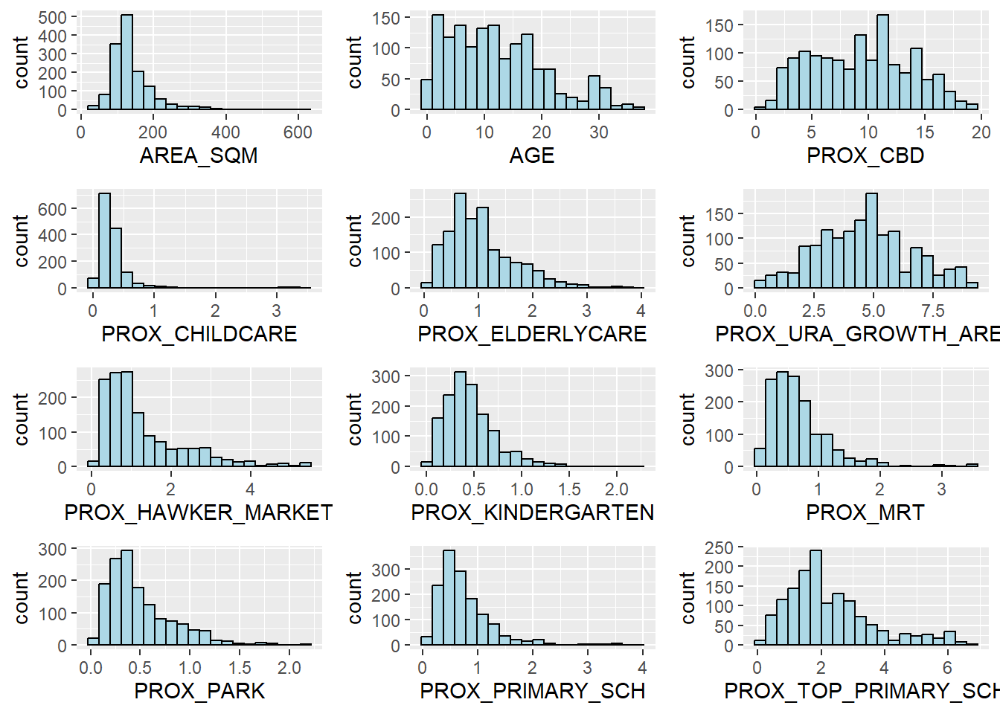
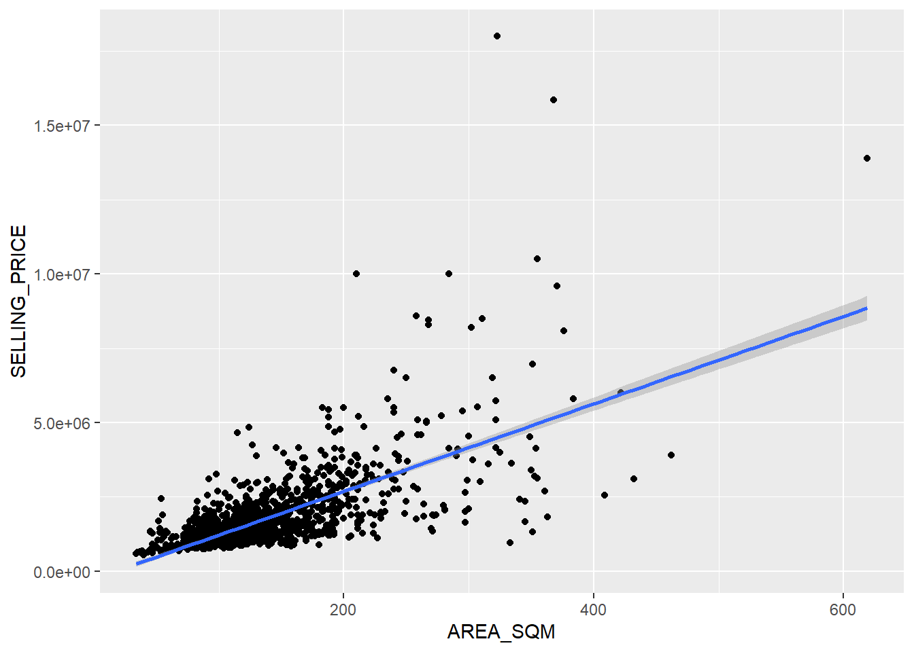
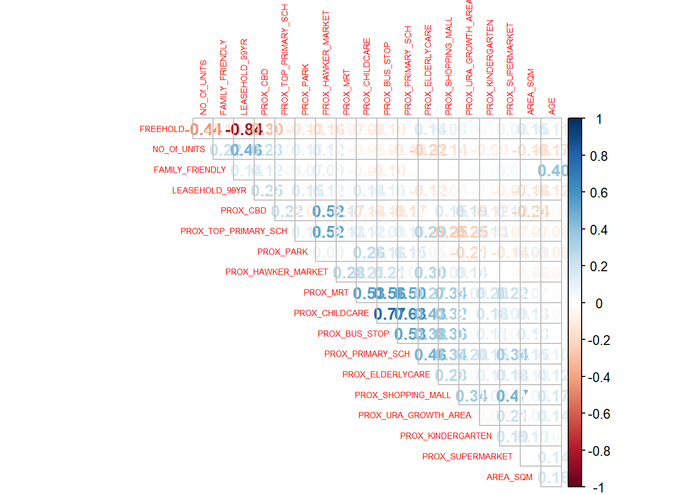
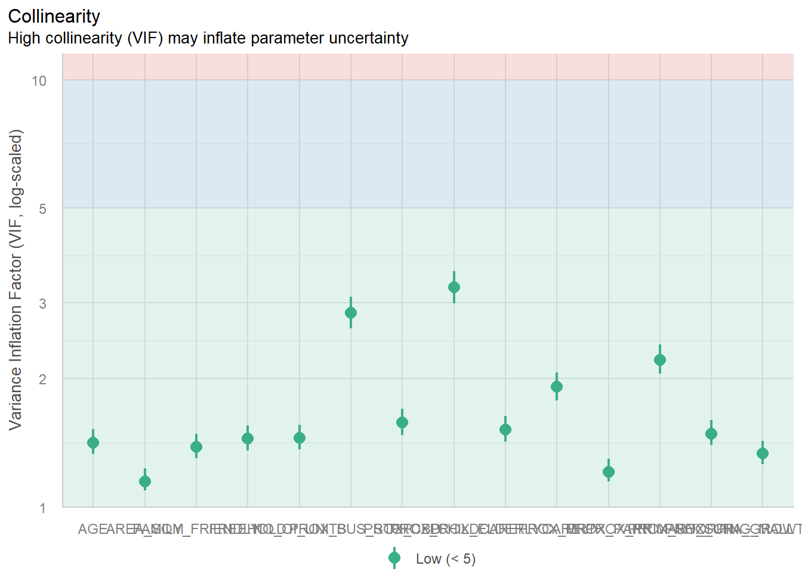
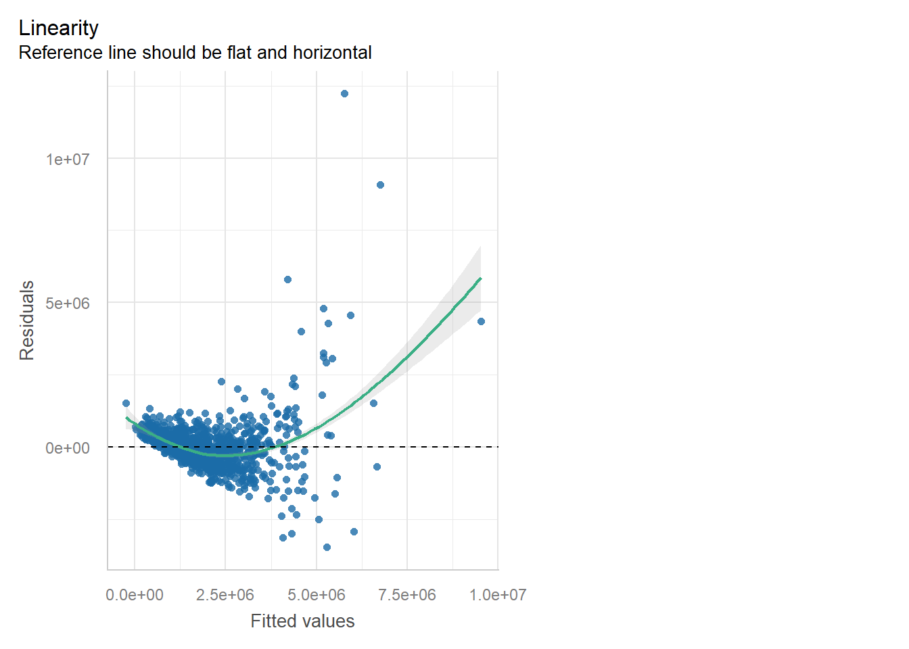
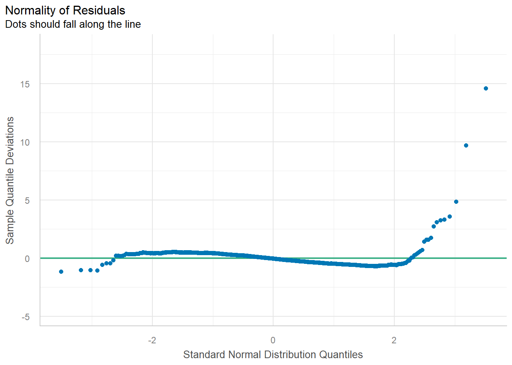
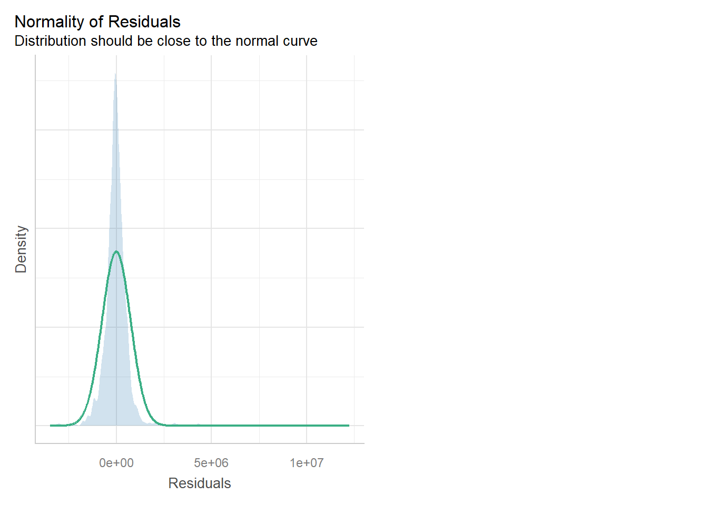
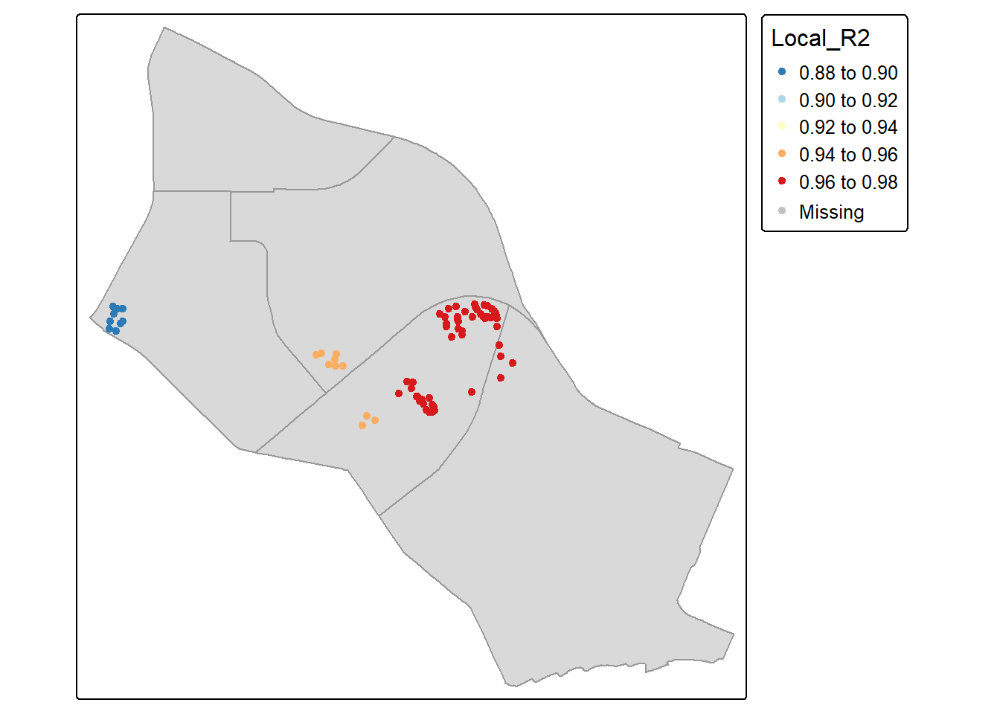

pacman::p_load(olsrr, corrplot, ggpubr,
sf, sfdep, GWmodel, tmap,
tidyverse, gtsummary,
performance, RColorBrewer)In-class Exercise 7
1 Overview
In this exercise, we will learn to build hedonic pricing models for private high-rise property using Geographically Weighted Regression (GWR) methods to account for non-stationary variables.
Geographically weighted regression (GWR) is a spatial statistical technique that takes non-stationary variables into consideration (e.g., climate; demographic factors; physical environment characteristics) and models the local relationships between these independent variables and an outcome of interest (also known as dependent variable).
In this exercise, The dependent variable is the resale prices of condominium in 2015. The independent variables are divided into either structural and locational.
We will be using the GWmodel package. It provides a collection of localised spatial statistical methods, namely: GW summary statistics, GW principal components analysis, GW discriminant analysis and various forms of GW regression; some of which are provided in basic and robust (outlier resistant) forms. Commonly, outputs or parameters of the GWmodel are mapped to provide a useful exploratory tool, which can often precede (and direct) a more traditional or sophisticated statistical analysis.
2 Learning Outcome
- Understand the basics of geographically weighted regression (GWR).
- Build and evaluate hedonic pricing models using GWR.
- Convert geospatial and aspatial data into appropriate formats for analysis.
- Perform exploratory data analysis (EDA) using statistical graphics.
- Visualize the model outputs and spatial patterns using various R packages.
- Assess spatial autocorrelation and other statistical properties of model residuals.
- Compare and interpret fixed and adaptive bandwidth GWR models.
3 The Data
The following 2 datasets will be used in this study:
| Data Set | Description | Format |
|---|---|---|
| MP14_SUBZONE_WEB_PL | URA Master Plan 2014’s planning subzone boundaries represented as polygon features. | ESRI Shapefile |
| condo_resale_2015.csv | Data on condominium resale prices in 2015, including structural and locational attributes. | CSV |
4 Installing and Launching the R Packages
The following R packages will be used in this exercise:
| Package | Purpose | Use Case in Exercise |
|---|---|---|
| sf | Manages, processes, and manipulates vector-based geospatial data. | Handling and converting geospatial data such as the URA Master Plan boundaries. |
| GWmodel | Calibrates geographically weighted models for local spatial analysis. | Building hedonic pricing models using fixed and adaptive bandwidth GWR methods. |
| olsrr | Performs diagnostics and builds better multiple linear regression models. | Testing for multicollinearity, normality, and linearity of the regression model. |
| corrplot | Provides visual tools to explore data correlation matrices. | Visualizing relationships between independent variables in the dataset. |
| tmap | Creates static and interactive thematic maps using cartographic quality elements. | Visualizing the geospatial distribution of condominium resale prices and other model outputs. |
| tidyverse | A collection of packages for data science tasks such as data manipulation, visualization, and modeling. | Importing CSV files, wrangling data, and performing data transformations and visualizations. |
| ggpubr | Enhances ‘ggplot2’ for easier ‘publication-ready’ plots. | Creating small multiple histograms and scatterplots for exploratory data analysis. |
To install and load these packages, use the following code:
5 Geospatial Data Wrangling
5.1 Importing geospatial data
The geospatial data used in this hands-on exercise is called MP14_SUBZONE_WEB_PL. It is in ESRI shapefile format. The shapefile consists of URA Master Plan 2014’s planning subzone boundaries. Polygon features are used to represent these geographic boundaries. The GIS data is in svy21 projected coordinates systems.
The code chunk below is used to import MP_SUBZONE_WEB_PL shapefile by using st_read() of sf packages.
mpsz = st_read(dsn = "data/geospatial",
layer = "MP14_SUBZONE_WEB_PL")Reading layer `MP14_SUBZONE_WEB_PL' from data source
`D:\ssinha8752\ISSS608-VAA\In-class_Ex\In-class_Ex07\data\geospatial'
using driver `ESRI Shapefile'
Simple feature collection with 323 features and 15 fields
Geometry type: MULTIPOLYGON
Dimension: XY
Bounding box: xmin: 2667.538 ymin: 15748.72 xmax: 56396.44 ymax: 50256.33
Projected CRS: SVY21The report above shows that the R object used to contain the imported MP14_SUBZONE_WEB_PL shapefile is called mpsz and it is a simple feature object. The geometry type is multipolygon. it is also important to note that mpsz simple feature object does not have EPSG information.
5.2 Updating CRS information
The code chunk below updates the newly imported mpsz with the correct ESPG code (i.e. 3414)
mpsz_svy21 <- st_transform(mpsz, 3414)After transforming the projection metadata, you can varify the projection of the newly transformed mpsz_svy21 by using st_crs() of sf package.
The code chunk below will be used to verify the newly transformed mpsz_svy21.
st_crs(mpsz_svy21)Coordinate Reference System:
User input: EPSG:3414
wkt:
PROJCRS["SVY21 / Singapore TM",
BASEGEOGCRS["SVY21",
DATUM["SVY21",
ELLIPSOID["WGS 84",6378137,298.257223563,
LENGTHUNIT["metre",1]]],
PRIMEM["Greenwich",0,
ANGLEUNIT["degree",0.0174532925199433]],
ID["EPSG",4757]],
CONVERSION["Singapore Transverse Mercator",
METHOD["Transverse Mercator",
ID["EPSG",9807]],
PARAMETER["Latitude of natural origin",1.36666666666667,
ANGLEUNIT["degree",0.0174532925199433],
ID["EPSG",8801]],
PARAMETER["Longitude of natural origin",103.833333333333,
ANGLEUNIT["degree",0.0174532925199433],
ID["EPSG",8802]],
PARAMETER["Scale factor at natural origin",1,
SCALEUNIT["unity",1],
ID["EPSG",8805]],
PARAMETER["False easting",28001.642,
LENGTHUNIT["metre",1],
ID["EPSG",8806]],
PARAMETER["False northing",38744.572,
LENGTHUNIT["metre",1],
ID["EPSG",8807]]],
CS[Cartesian,2],
AXIS["northing (N)",north,
ORDER[1],
LENGTHUNIT["metre",1]],
AXIS["easting (E)",east,
ORDER[2],
LENGTHUNIT["metre",1]],
USAGE[
SCOPE["Cadastre, engineering survey, topographic mapping."],
AREA["Singapore - onshore and offshore."],
BBOX[1.13,103.59,1.47,104.07]],
ID["EPSG",3414]]Notice that the EPSG: is indicated as 3414 now.
Next, we will reveal the extent of mpsz_svy21 by using st_bbox() of sf package.
st_bbox(mpsz_svy21) xmin ymin xmax ymax
2667.538 15748.721 56396.440 50256.334 6 Aspatial Data Wrangling
6.1 Importing the aspatial data
The condo_resale_2015 is in csv file format. The codes chunk below uses read_csv() function of readr package to import condo_resale_2015 into R as a tibble data frame called condo_resale.
condo_resale = read_csv(
"data/aspatial/Condo_resale_2015.csv")After importing the data file into R, it is important for us to examine if the data file has been imported correctly.
The codes chunks below uses glimpse() to display the data structure of will do the job.
glimpse(condo_resale)Rows: 1,436
Columns: 23
$ LATITUDE <dbl> 1.287145, 1.328698, 1.313727, 1.308563, 1.321437,…
$ LONGITUDE <dbl> 103.7802, 103.8123, 103.7971, 103.8247, 103.9505,…
$ POSTCODE <dbl> 118635, 288420, 267833, 258380, 467169, 466472, 3…
$ SELLING_PRICE <dbl> 3000000, 3880000, 3325000, 4250000, 1400000, 1320…
$ AREA_SQM <dbl> 309, 290, 248, 127, 145, 139, 218, 141, 165, 168,…
$ AGE <dbl> 30, 32, 33, 7, 28, 22, 24, 24, 27, 31, 17, 22, 6,…
$ PROX_CBD <dbl> 7.941259, 6.609797, 6.898000, 4.038861, 11.783402…
$ PROX_CHILDCARE <dbl> 0.16597932, 0.28027246, 0.42922669, 0.39473543, 0…
$ PROX_ELDERLYCARE <dbl> 2.5198118, 1.9333338, 0.5021395, 1.9910316, 1.121…
$ PROX_URA_GROWTH_AREA <dbl> 6.618741, 7.505109, 6.463887, 4.906512, 6.410632,…
$ PROX_HAWKER_MARKET <dbl> 1.76542207, 0.54507614, 0.37789301, 1.68259969, 0…
$ PROX_KINDERGARTEN <dbl> 0.05835552, 0.61592412, 0.14120309, 0.38200076, 0…
$ PROX_MRT <dbl> 0.5607188, 0.6584461, 0.3053433, 0.6910183, 0.528…
$ PROX_PARK <dbl> 1.1710446, 0.1992269, 0.2779886, 0.9832843, 0.116…
$ PROX_PRIMARY_SCH <dbl> 1.6340256, 0.9747834, 1.4715016, 1.4546324, 0.709…
$ PROX_TOP_PRIMARY_SCH <dbl> 3.3273195, 0.9747834, 1.4715016, 2.3006394, 0.709…
$ PROX_SHOPPING_MALL <dbl> 2.2102717, 2.9374279, 1.2256850, 0.3525671, 1.307…
$ PROX_SUPERMARKET <dbl> 0.9103958, 0.5900617, 0.4135583, 0.4162219, 0.581…
$ PROX_BUS_STOP <dbl> 0.10336166, 0.28673408, 0.28504777, 0.29872340, 0…
$ NO_Of_UNITS <dbl> 18, 20, 27, 30, 30, 31, 32, 32, 32, 32, 34, 34, 3…
$ FAMILY_FRIENDLY <dbl> 0, 0, 0, 0, 0, 1, 1, 0, 1, 1, 0, 0, 0, 0, 0, 0, 0…
$ FREEHOLD <dbl> 1, 1, 1, 1, 1, 1, 1, 1, 1, 0, 1, 1, 1, 1, 1, 1, 1…
$ LEASEHOLD_99YR <dbl> 0, 0, 0, 0, 0, 0, 0, 0, 0, 0, 0, 0, 0, 0, 0, 0, 0…head(condo_resale$LONGITUDE)[1] 103.7802 103.8123 103.7971 103.8247 103.9505 103.9386head(condo_resale$LATITUDE)[1] 1.287145 1.328698 1.313727 1.308563 1.321437 1.314198The print above reveals that the values of LONGITITUDE and LATITUDE fields are in decimal degree. Most probably wgs84 geographic coordinate system is used.
Next, summary() of base R is used to display the summary statistics of cond_resale tibble data frame.
summary(condo_resale) LATITUDE LONGITUDE POSTCODE SELLING_PRICE
Min. :1.240 Min. :103.7 Min. : 18965 Min. : 540000
1st Qu.:1.309 1st Qu.:103.8 1st Qu.:259849 1st Qu.: 1100000
Median :1.328 Median :103.8 Median :469298 Median : 1383222
Mean :1.334 Mean :103.8 Mean :440439 Mean : 1751211
3rd Qu.:1.357 3rd Qu.:103.9 3rd Qu.:589486 3rd Qu.: 1950000
Max. :1.454 Max. :104.0 Max. :828833 Max. :18000000
AREA_SQM AGE PROX_CBD PROX_CHILDCARE
Min. : 34.0 Min. : 0.00 Min. : 0.3869 Min. :0.004927
1st Qu.:103.0 1st Qu.: 5.00 1st Qu.: 5.5574 1st Qu.:0.174481
Median :121.0 Median :11.00 Median : 9.3567 Median :0.258135
Mean :136.5 Mean :12.14 Mean : 9.3254 Mean :0.326313
3rd Qu.:156.0 3rd Qu.:18.00 3rd Qu.:12.6661 3rd Qu.:0.368293
Max. :619.0 Max. :37.00 Max. :19.1804 Max. :3.465726
PROX_ELDERLYCARE PROX_URA_GROWTH_AREA PROX_HAWKER_MARKET PROX_KINDERGARTEN
Min. :0.05451 Min. :0.2145 Min. :0.05182 Min. :0.004927
1st Qu.:0.61254 1st Qu.:3.1643 1st Qu.:0.55245 1st Qu.:0.276345
Median :0.94179 Median :4.6186 Median :0.90842 Median :0.413385
Mean :1.05352 Mean :4.5981 Mean :1.27987 Mean :0.458903
3rd Qu.:1.35122 3rd Qu.:5.7550 3rd Qu.:1.68578 3rd Qu.:0.578474
Max. :3.94916 Max. :9.1554 Max. :5.37435 Max. :2.229045
PROX_MRT PROX_PARK PROX_PRIMARY_SCH PROX_TOP_PRIMARY_SCH
Min. :0.05278 Min. :0.02906 Min. :0.07711 Min. :0.07711
1st Qu.:0.34646 1st Qu.:0.26211 1st Qu.:0.44024 1st Qu.:1.34451
Median :0.57430 Median :0.39926 Median :0.63505 Median :1.88213
Mean :0.67316 Mean :0.49802 Mean :0.75471 Mean :2.27347
3rd Qu.:0.84844 3rd Qu.:0.65592 3rd Qu.:0.95104 3rd Qu.:2.90954
Max. :3.48037 Max. :2.16105 Max. :3.92899 Max. :6.74819
PROX_SHOPPING_MALL PROX_SUPERMARKET PROX_BUS_STOP NO_Of_UNITS
Min. :0.0000 Min. :0.0000 Min. :0.001595 Min. : 18.0
1st Qu.:0.5258 1st Qu.:0.3695 1st Qu.:0.098356 1st Qu.: 188.8
Median :0.9357 Median :0.5687 Median :0.151711 Median : 360.0
Mean :1.0455 Mean :0.6141 Mean :0.193974 Mean : 409.2
3rd Qu.:1.3994 3rd Qu.:0.7862 3rd Qu.:0.220466 3rd Qu.: 590.0
Max. :3.4774 Max. :2.2441 Max. :2.476639 Max. :1703.0
FAMILY_FRIENDLY FREEHOLD LEASEHOLD_99YR
Min. :0.0000 Min. :0.0000 Min. :0.0000
1st Qu.:0.0000 1st Qu.:0.0000 1st Qu.:0.0000
Median :0.0000 Median :0.0000 Median :0.0000
Mean :0.4868 Mean :0.4227 Mean :0.4882
3rd Qu.:1.0000 3rd Qu.:1.0000 3rd Qu.:1.0000
Max. :1.0000 Max. :1.0000 Max. :1.0000 6.2 Converting aspatial data frame into a sf object
Currently, the condo_resale tibble data frame is aspatial. We will convert it to a sf object. The code chunk below converts condo_resale data frame into a simple feature data frame by using st_as_sf() of sf packages.
condo_resale.sf <- st_as_sf(condo_resale,
coords = c("LONGITUDE", "LATITUDE"),
crs=4326) %>%
st_transform(crs=3414)Next, head() is used to list the content of condo_resale.sf object.
head(condo_resale.sf)Simple feature collection with 6 features and 21 fields
Geometry type: POINT
Dimension: XY
Bounding box: xmin: 22085.12 ymin: 29951.54 xmax: 41042.56 ymax: 34546.2
Projected CRS: SVY21 / Singapore TM
# A tibble: 6 × 22
POSTCODE SELLING_PRICE AREA_SQM AGE PROX_CBD PROX_CHILDCARE PROX_ELDERLYCARE
<dbl> <dbl> <dbl> <dbl> <dbl> <dbl> <dbl>
1 118635 3000000 309 30 7.94 0.166 2.52
2 288420 3880000 290 32 6.61 0.280 1.93
3 267833 3325000 248 33 6.90 0.429 0.502
4 258380 4250000 127 7 4.04 0.395 1.99
5 467169 1400000 145 28 11.8 0.119 1.12
6 466472 1320000 139 22 10.3 0.125 0.789
# ℹ 15 more variables: PROX_URA_GROWTH_AREA <dbl>, PROX_HAWKER_MARKET <dbl>,
# PROX_KINDERGARTEN <dbl>, PROX_MRT <dbl>, PROX_PARK <dbl>,
# PROX_PRIMARY_SCH <dbl>, PROX_TOP_PRIMARY_SCH <dbl>,
# PROX_SHOPPING_MALL <dbl>, PROX_SUPERMARKET <dbl>, PROX_BUS_STOP <dbl>,
# NO_Of_UNITS <dbl>, FAMILY_FRIENDLY <dbl>, FREEHOLD <dbl>,
# LEASEHOLD_99YR <dbl>, geometry <POINT [m]>Notice that the output is in point feature data frame.
7 Exploratory Data Analysis (EDA)
In the section, we will learn how to use statistical graphics functions of ggplot2 package to perform EDA.
7.1 EDA using statistical graphics
We can plot the distribution of SELLING_PRICE by using appropriate Exploratory Data Analysis (EDA) as shown in the code chunk below.
ggplot(data=condo_resale.sf,
aes(x=`SELLING_PRICE`)) +
geom_histogram(bins=20,
color="black",
fill="light blue")
The figure above reveals a right skewed distribution. This means that more condominium units were transacted at relative lower prices.
Statistically, the skewed dsitribution can be normalised by using log transformation. The code chunk below is used to derive a new variable called LOG_SELLING_PRICE by using a log transformation on the variable SELLING_PRICE. It is performed using mutate() of dplyr package.
condo_resale.sf <- condo_resale.sf %>%
mutate(`LOG_SELLING_PRICE` = log(SELLING_PRICE))Now, we can plot the LOG_SELLING_PRICE using the code chunk below.
ggplot(data=condo_resale.sf,
aes(x=`LOG_SELLING_PRICE`)) +
geom_histogram(bins=20,
color="black",
fill="light blue")
Notice that the distribution is relatively less skewed after the transformation.
7.2 Multiple Histogram Plots distribution of variables
In this section, we will learn how to draw a small multiple histograms (also known as trellis plot) by using ggarrange() of ggpubr package.
The code chunk below is used to create 12 histograms. Then, ggarrange() is used to organised these histogram into a 3 columns by 4 rows small multiple plot.
AREA_SQM <- ggplot(data=condo_resale.sf,
aes(x= `AREA_SQM`)) +
geom_histogram(bins=20,
color="black",
fill="light blue")
AGE <- ggplot(data=condo_resale.sf,
aes(x= `AGE`)) +
geom_histogram(bins=20,
color="black",
fill="light blue")
PROX_CBD <- ggplot(data=condo_resale.sf,
aes(x= `PROX_CBD`)) +
geom_histogram(bins=20,
color="black",
fill="light blue")
PROX_CHILDCARE <- ggplot(data=condo_resale.sf,
aes(x= `PROX_CHILDCARE`)) +
geom_histogram(bins=20,
color="black",
fill="light blue")
PROX_ELDERLYCARE <- ggplot(data=condo_resale.sf,
aes(x= `PROX_ELDERLYCARE`)) +
geom_histogram(bins=20,
color="black",
fill="light blue")
PROX_URA_GROWTH_AREA <- ggplot(data=condo_resale.sf,
aes(x= `PROX_URA_GROWTH_AREA`)) +
geom_histogram(bins=20,
color="black",
fill="light blue")
PROX_HAWKER_MARKET <- ggplot(data=condo_resale.sf,
aes(x= `PROX_HAWKER_MARKET`)) +
geom_histogram(bins=20,
color="black",
fill="light blue")
PROX_KINDERGARTEN <- ggplot(data=condo_resale.sf,
aes(x= `PROX_KINDERGARTEN`)) +
geom_histogram(bins=20,
color="black",
fill="light blue")
PROX_MRT <- ggplot(data=condo_resale.sf,
aes(x= `PROX_MRT`)) +
geom_histogram(bins=20,
color="black",
fill="light blue")
PROX_PARK <- ggplot(data=condo_resale.sf,
aes(x= `PROX_PARK`)) +
geom_histogram(bins=20,
color="black",
fill="light blue")
PROX_PRIMARY_SCH <- ggplot(data=condo_resale.sf,
aes(x= `PROX_PRIMARY_SCH`)) +
geom_histogram(bins=20,
color="black",
fill="light blue")
PROX_TOP_PRIMARY_SCH <- ggplot(data=condo_resale.sf,
aes(x= `PROX_TOP_PRIMARY_SCH`)) +
geom_histogram(bins=20,
color="black",
fill="light blue")
ggarrange(AREA_SQM, AGE, PROX_CBD, PROX_CHILDCARE,
PROX_ELDERLYCARE, PROX_URA_GROWTH_AREA,
PROX_HAWKER_MARKET, PROX_KINDERGARTEN, PROX_MRT,
PROX_PARK, PROX_PRIMARY_SCH, PROX_TOP_PRIMARY_SCH,
ncol = 3, nrow = 4)
8 Hedonic Pricing Modelling in R
In this section, we will learn how to building hedonic pricing models for condominium resale units using lm() of R base.
8.1 Simple Linear Regression Method
First, we will build a simple linear regression model by using SELLING_PRICE as the dependent variable and AREA_SQM as the independent variable.
condo.slr <- lm(formula=SELLING_PRICE ~ AREA_SQM,
data = condo_resale.sf)lm() returns an object of class “lm” or for multiple responses of class c(“mlm”, “lm”).
The functions summary() and anova() can be used to obtain and print a summary and analysis of variance table of the results. The generic accessor functions coefficients, effects, fitted.values and residuals extract various useful features of the value returned by lm.
summary(condo.slr)
Call:
lm(formula = SELLING_PRICE ~ AREA_SQM, data = condo_resale.sf)
Residuals:
Min 1Q Median 3Q Max
-3695815 -391764 -87517 258900 13503875
Coefficients:
Estimate Std. Error t value Pr(>|t|)
(Intercept) -258121.1 63517.2 -4.064 5.09e-05 ***
AREA_SQM 14719.0 428.1 34.381 < 2e-16 ***
---
Signif. codes: 0 '***' 0.001 '**' 0.01 '*' 0.05 '.' 0.1 ' ' 1
Residual standard error: 942700 on 1434 degrees of freedom
Multiple R-squared: 0.4518, Adjusted R-squared: 0.4515
F-statistic: 1182 on 1 and 1434 DF, p-value: < 2.2e-16The output report reveals that the SELLING_PRICE can be explained by using the formula:
y = -258121.1 + 14719x1The R-squared of 0.4518 reveals that the simple regression model built is able to explain about 45% of the resale prices.
Since p-value is much smaller than 0.0001, we will reject the null hypothesis that mean is a good estimator of SELLING_PRICE. This will allow us to infer that simple linear regression model above is a good estimator of SELLING_PRICE.
The Coefficients: section of the report reveals that the p-values of both the estimates of the Intercept and ARA_SQM are smaller than 0.001. In view of this, the null hypothesis of the B0 and B1 are equal to 0 will be rejected. As a results, we will be able to infer that the B0 and B1 are good parameter estimates.
To visualise the best fit curve on a scatterplot, we can incorporate lm() as a method function in ggplot’s geometry as shown in the code chunk below
ggplot(data=condo_resale.sf,
aes(x=`AREA_SQM`, y=`SELLING_PRICE`)) +
geom_point() +
geom_smooth(method = lm)
Figure above reveals that there are a few statistical outliers with relatively high selling prices.
8.2 Multiple Linear Regression Method
8.2.1 Visualising the relationships of the independent variables
Before building a multiple regression model, it is important to ensure that the indepdent variables used are not highly correlated to each other. If these highly correlated independent variables are used in building a regression model by mistake, the quality of the model will be compromised. This phenomenon is known as multicollinearity in statistics.
Correlation matrix is commonly used to visualise the relationships between the independent variables. Beside the pairs() of R, there are many packages support the display of a correlation matrix. In this section, the corrplot package will be used.
The code chunk below is used to plot a scatterplot matrix of the relationship between the independent variables in condo_resale data.frame.
corrplot(cor(condo_resale[, 5:23]),
diag = FALSE,
order = "AOE",
tl.pos = "td",
tl.cex = 0.5,
method = "number",
type = "upper")
Matrix reorder is very important for mining the hiden structure and patter in the matrix. There are four methods in corrplot (parameter order), named “AOE”, “FPC”, “hclust”, “alphabet”. In the code chunk above, AOE order is used. It orders the variables by using the angular order of the eigenvectors method suggested by Michael Friendly.
From the scatterplot matrix, it is clear that Freehold is highly correlated to LEASE_99YEAR. In view of this, it is wiser to only include either one of them in the subsequent model building. As a result, LEASE_99YEAR is excluded in the subsequent model building.
8.3 Building a hedonic pricing model using multiple linear regression method
The code chunk below using lm() to calibrate the multiple linear regression model.
condo.mlr <- lm(
formula = SELLING_PRICE ~ AREA_SQM + AGE +
PROX_CBD + PROX_CHILDCARE + PROX_ELDERLYCARE +
PROX_URA_GROWTH_AREA + PROX_HAWKER_MARKET +
PROX_KINDERGARTEN + PROX_MRT + PROX_PARK +
PROX_PRIMARY_SCH + PROX_TOP_PRIMARY_SCH +
PROX_SHOPPING_MALL + PROX_SUPERMARKET +
PROX_BUS_STOP + NO_Of_UNITS +
FAMILY_FRIENDLY + FREEHOLD,
data=condo_resale.sf)
summary(condo.mlr)
Call:
lm(formula = SELLING_PRICE ~ AREA_SQM + AGE + PROX_CBD + PROX_CHILDCARE +
PROX_ELDERLYCARE + PROX_URA_GROWTH_AREA + PROX_HAWKER_MARKET +
PROX_KINDERGARTEN + PROX_MRT + PROX_PARK + PROX_PRIMARY_SCH +
PROX_TOP_PRIMARY_SCH + PROX_SHOPPING_MALL + PROX_SUPERMARKET +
PROX_BUS_STOP + NO_Of_UNITS + FAMILY_FRIENDLY + FREEHOLD,
data = condo_resale.sf)
Residuals:
Min 1Q Median 3Q Max
-3475964 -293923 -23069 241043 12260381
Coefficients:
Estimate Std. Error t value Pr(>|t|)
(Intercept) 481728.40 121441.01 3.967 7.65e-05 ***
AREA_SQM 12708.32 369.59 34.385 < 2e-16 ***
AGE -24440.82 2763.16 -8.845 < 2e-16 ***
PROX_CBD -78669.78 6768.97 -11.622 < 2e-16 ***
PROX_CHILDCARE -351617.91 109467.25 -3.212 0.00135 **
PROX_ELDERLYCARE 171029.42 42110.51 4.061 5.14e-05 ***
PROX_URA_GROWTH_AREA 38474.53 12523.57 3.072 0.00217 **
PROX_HAWKER_MARKET 23746.10 29299.76 0.810 0.41782
PROX_KINDERGARTEN 147468.99 82668.87 1.784 0.07466 .
PROX_MRT -314599.68 57947.44 -5.429 6.66e-08 ***
PROX_PARK 563280.50 66551.68 8.464 < 2e-16 ***
PROX_PRIMARY_SCH 180186.08 65237.95 2.762 0.00582 **
PROX_TOP_PRIMARY_SCH 2280.04 20410.43 0.112 0.91107
PROX_SHOPPING_MALL -206604.06 42840.60 -4.823 1.57e-06 ***
PROX_SUPERMARKET -44991.80 77082.64 -0.584 0.55953
PROX_BUS_STOP 683121.35 138353.28 4.938 8.85e-07 ***
NO_Of_UNITS -231.18 89.03 -2.597 0.00951 **
FAMILY_FRIENDLY 140340.77 47020.55 2.985 0.00289 **
FREEHOLD 359913.01 49220.22 7.312 4.38e-13 ***
---
Signif. codes: 0 '***' 0.001 '**' 0.01 '*' 0.05 '.' 0.1 ' ' 1
Residual standard error: 755800 on 1417 degrees of freedom
Multiple R-squared: 0.6518, Adjusted R-squared: 0.6474
F-statistic: 147.4 on 18 and 1417 DF, p-value: < 2.2e-168.4 Revising the model
With reference to the report above, it is clear that not all the independent variables are statistically significant. We will revised the model by removing those variables which are not statistically significant.
Now, we are ready to calibrate the revised model by using the code chunk below.
condo.mlr1 <- lm(
formula = SELLING_PRICE ~ AREA_SQM + AGE +
PROX_CBD + PROX_CHILDCARE + PROX_MRT +
PROX_ELDERLYCARE + PROX_URA_GROWTH_AREA +
PROX_PARK + PROX_PRIMARY_SCH +
PROX_SHOPPING_MALL + PROX_BUS_STOP +
NO_Of_UNITS + FAMILY_FRIENDLY + FREEHOLD,
data=condo_resale.sf)
summary(condo.mlr1)
Call:
lm(formula = SELLING_PRICE ~ AREA_SQM + AGE + PROX_CBD + PROX_CHILDCARE +
PROX_MRT + PROX_ELDERLYCARE + PROX_URA_GROWTH_AREA + PROX_PARK +
PROX_PRIMARY_SCH + PROX_SHOPPING_MALL + PROX_BUS_STOP + NO_Of_UNITS +
FAMILY_FRIENDLY + FREEHOLD, data = condo_resale.sf)
Residuals:
Min 1Q Median 3Q Max
-3470778 -298119 -23481 248917 12234210
Coefficients:
Estimate Std. Error t value Pr(>|t|)
(Intercept) 527633.22 108183.22 4.877 1.20e-06 ***
AREA_SQM 12777.52 367.48 34.771 < 2e-16 ***
AGE -24687.74 2754.84 -8.962 < 2e-16 ***
PROX_CBD -77131.32 5763.12 -13.384 < 2e-16 ***
PROX_CHILDCARE -318472.75 107959.51 -2.950 0.003231 **
PROX_MRT -294745.11 56916.37 -5.179 2.56e-07 ***
PROX_ELDERLYCARE 185575.62 39901.86 4.651 3.61e-06 ***
PROX_URA_GROWTH_AREA 39163.25 11754.83 3.332 0.000885 ***
PROX_PARK 570504.81 65507.03 8.709 < 2e-16 ***
PROX_PRIMARY_SCH 159856.14 60234.60 2.654 0.008046 **
PROX_SHOPPING_MALL -220947.25 36561.83 -6.043 1.93e-09 ***
PROX_BUS_STOP 682482.22 134513.24 5.074 4.42e-07 ***
NO_Of_UNITS -245.48 87.95 -2.791 0.005321 **
FAMILY_FRIENDLY 146307.58 46893.02 3.120 0.001845 **
FREEHOLD 350599.81 48506.48 7.228 7.98e-13 ***
---
Signif. codes: 0 '***' 0.001 '**' 0.01 '*' 0.05 '.' 0.1 ' ' 1
Residual standard error: 756000 on 1421 degrees of freedom
Multiple R-squared: 0.6507, Adjusted R-squared: 0.6472
F-statistic: 189.1 on 14 and 1421 DF, p-value: < 2.2e-16The output above reveals that all explanatory variables are statistically significant at 95% confident level.
8.5 Preparing Publication Quality Table: gtsummary method
The gtsummary package provides an elegant and flexible way to create publication-ready summary tables in R.
In the code chunk below, tbl_regression() is used to create a well formatted regression report.
tbl_regression(condo.mlr1, intercept = TRUE)| Characteristic | Beta | 95% CI | p-value |
|---|---|---|---|
| (Intercept) | 527,633 | 315,417, 739,849 | <0.001 |
| AREA_SQM | 12,778 | 12,057, 13,498 | <0.001 |
| AGE | -24,688 | -30,092, -19,284 | <0.001 |
| PROX_CBD | -77,131 | -88,436, -65,826 | <0.001 |
| PROX_CHILDCARE | -318,473 | -530,250, -106,696 | 0.003 |
| PROX_MRT | -294,745 | -406,394, -183,096 | <0.001 |
| PROX_ELDERLYCARE | 185,576 | 107,303, 263,849 | <0.001 |
| PROX_URA_GROWTH_AREA | 39,163 | 16,105, 62,222 | <0.001 |
| PROX_PARK | 570,505 | 442,004, 699,006 | <0.001 |
| PROX_PRIMARY_SCH | 159,856 | 41,698, 278,014 | 0.008 |
| PROX_SHOPPING_MALL | -220,947 | -292,668, -149,226 | <0.001 |
| PROX_BUS_STOP | 682,482 | 418,616, 946,348 | <0.001 |
| NO_Of_UNITS | -245 | -418, -73 | 0.005 |
| FAMILY_FRIENDLY | 146,308 | 54,321, 238,295 | 0.002 |
| FREEHOLD | 350,600 | 255,448, 445,752 | <0.001 |
| Abbreviation: CI = Confidence Interval | |||
With gtsummary package, model statistics can be included in the report by either appending them to the report table by using add_glance_table() or adding as a table source note by using add_glance_source_note() as shown in the code chunk below.
tbl_regression(condo.mlr1,
intercept = TRUE) %>%
add_glance_source_note(
label = list(sigma ~ "\U03C3"),
include = c(r.squared, adj.r.squared,
AIC, statistic,
p.value, sigma))| Characteristic | Beta | 95% CI | p-value |
|---|---|---|---|
| (Intercept) | 527,633 | 315,417, 739,849 | <0.001 |
| AREA_SQM | 12,778 | 12,057, 13,498 | <0.001 |
| AGE | -24,688 | -30,092, -19,284 | <0.001 |
| PROX_CBD | -77,131 | -88,436, -65,826 | <0.001 |
| PROX_CHILDCARE | -318,473 | -530,250, -106,696 | 0.003 |
| PROX_MRT | -294,745 | -406,394, -183,096 | <0.001 |
| PROX_ELDERLYCARE | 185,576 | 107,303, 263,849 | <0.001 |
| PROX_URA_GROWTH_AREA | 39,163 | 16,105, 62,222 | <0.001 |
| PROX_PARK | 570,505 | 442,004, 699,006 | <0.001 |
| PROX_PRIMARY_SCH | 159,856 | 41,698, 278,014 | 0.008 |
| PROX_SHOPPING_MALL | -220,947 | -292,668, -149,226 | <0.001 |
| PROX_BUS_STOP | 682,482 | 418,616, 946,348 | <0.001 |
| NO_Of_UNITS | -245 | -418, -73 | 0.005 |
| FAMILY_FRIENDLY | 146,308 | 54,321, 238,295 | 0.002 |
| FREEHOLD | 350,600 | 255,448, 445,752 | <0.001 |
| Abbreviation: CI = Confidence Interval | |||
| R² = 0.651; Adjusted R² = 0.647; AIC = 42,967; Statistic = 189; p-value = <0.001; σ = 755,957 | |||
8.6 Regression Diagnostics
Regression diagnostics are a set of procedures used to check if a regression model’s assumptions are met and how well the model fits the data. These diagnostics involve checking for issues like non-linear relationships, non-normal errors, non-constant variance, and influential observations to ensure the model’s conclusions are valid and reliable. Common methods include graphical analysis, like residual plots and QQ-plots, and quantitative tests
In this section, we would like to introduce you a fantastic R package specially programmed for performing OLS regression diagnostics. It is called olsrr. It provides a collection of very useful methods for building better multiple linear regression models:
- comprehensive regression output
- residual diagnostics
- measures of influence
- heteroskedasticity tests
- collinearity diagnostics
- model fit assessment
- variable contribution assessment
- variable selection procedures
8.6.1 Multicollinearity test
Multicollinearity occurs when independent variables are not truly independent, meaning a change in one is associated with a change in another. This makes it hard for the model to isolate each variable’s influence on the outcome.
Performing a multicollinearity test is crucial in multiple linear regression because it ensures the reliability and interpretability of the model’s results. High multicollinearity, where independent variables are highly correlated, inflates the variance of the estimated coefficients, making them unstable, unreliable, and difficult to interpret. This instability can lead to misleading statistical conclusions, such as a variable appearing statistically insignificant when it is not.
In the code chunk below, the check_collinearity() of performance package is used to test if there are sign of multicollinearity.
check_collinearity(condo.mlr1)# Check for Multicollinearity
Low Correlation
Term VIF VIF 95% CI adj. VIF Tolerance Tolerance 95% CI
AREA_SQM 1.15 [1.09, 1.23] 1.07 0.87 [0.81, 0.92]
AGE 1.41 [1.33, 1.52] 1.19 0.71 [0.66, 0.75]
PROX_CBD 1.57 [1.47, 1.69] 1.25 0.64 [0.59, 0.68]
PROX_CHILDCARE 3.26 [3.00, 3.56] 1.81 0.31 [0.28, 0.33]
PROX_MRT 1.91 [1.78, 2.07] 1.38 0.52 [0.48, 0.56]
PROX_ELDERLYCARE 1.52 [1.42, 1.63] 1.23 0.66 [0.61, 0.70]
PROX_URA_GROWTH_AREA 1.33 [1.26, 1.43] 1.15 0.75 [0.70, 0.80]
PROX_PARK 1.21 [1.15, 1.29] 1.10 0.83 [0.77, 0.87]
PROX_PRIMARY_SCH 2.21 [2.05, 2.40] 1.49 0.45 [0.42, 0.49]
PROX_SHOPPING_MALL 1.48 [1.39, 1.60] 1.22 0.67 [0.63, 0.72]
PROX_BUS_STOP 2.85 [2.62, 3.10] 1.69 0.35 [0.32, 0.38]
NO_Of_UNITS 1.45 [1.36, 1.56] 1.20 0.69 [0.64, 0.73]
FAMILY_FRIENDLY 1.38 [1.30, 1.48] 1.17 0.72 [0.67, 0.77]
FREEHOLD 1.44 [1.36, 1.55] 1.20 0.69 [0.65, 0.74]mlr.vif <- check_collinearity(condo.mlr1)
plot(mlr.vif)
Since the VIF of the independent variables are less than 10. We can safely conclude that there are no sign of multicollinearity among the independent variables.
8.6.2 Test for Non-Linearity
In multiple linear regression, it is important for us to test the assumption that linearity and additivity of the relationship between dependent and independent variables.
In the code chunk below, the ols_plot_resid_fit() of olsrr package is used to perform linearity assumption test.
check_model(condo.mlr1,
check = "linearity")
The figure above reveals that most of the data poitns are scattered around the 0 line, hence we can safely conclude that the relationships between the dependent variable and independent variables are linear. #### Test for Normality Assumption The normality assumption test for multiple linear regression checks if the model’s residuals (the differences between observed and predicted values) are normally distributed. This is crucial for accurate hypothesis testing and confidence intervals. To test this, you can use visual methods like histograms and Q-Q plots of the residuals, or conduct statistical tests like Shapiro-Wilk test and Kolmogorov-Smirnov test.
In the code chunk below, check_normality() of performance package is used to perform normality assumption test on condo.mlr1 model.
check_normality(condo.mlr1)Warning: Non-normality of residuals detected (p < .001).The print above reveals that the p-value of the normality assumption test is less than alpha value of 0.05. Hence we reject the normality assumption at 95% confident level.
Instead of showing the test statistic, plot() of see package can be used to plot a the output of check_normality() for visual inspection as shown below.
plot(check_normality(condo.mlr1),
type = "qq")
Q-Q plot above below shows that majority of the data points are felt along the zero line.
Another way to check for normality assumption visual is by using check_model() of performance package as shown in the code chunk below.
check_model(condo.mlr1,
check= "normality")
The figure reveals that the residual of the multiple linear regression model (i.e. condo.mlr1) is resemble normal distribution.
8.6.3 Testing for Spatial Autocorrelation
The hedonic model we try to build are using geographically referenced data. Hence, it is crucial to check for spatial autocorrelation because its presence can produce unreliable and misleading results. Traditional regression models, such as ordinary least squares (OLS), assume that observations are independent of one another. However, spatial data often violates this assumption.
Spatial autocorrelation is the correlation of a variable with itself across different spatial locations. Positive spatial autocorrelation means nearby features tend to be more similar, while negative autocorrelation means they tend to be more dissimilar. This phenomenon is based on the first law of geography: “Everything is related to everything else, but nearby things are more related than distant things”.
Ignoring spatial autocorrelation in a regression model can lead to serious statistical issues:
- Biased and inefficient coefficient estimates: If autocorrelation is present, standard errors of the model coefficients can be wrong, leading to unreliable hypothesis tests (p-values). The model might appear more significant than it is.
- Misleading significance tests: Standard regression models cannot distinguish between true explanatory power and the influence of spatial patterns, resulting in inaccurate p-values.
- Model misspecification: Significant spatial autocorrelation in the regression residuals often signals that important explanatory variables are missing from the model. The spatial patterning of the residuals (over- and under-predictions) can provide clues about what these missing variables might be.
- Inflated Type I error rates: Researchers might incorrectly reject a true null. To test for spatial autocorrelation, We can run a Moran’s I test on the model’s residuals. Significant spatial autocorrelation in the residuals means the model is not capturing the full spatial story.
In order to perform spatial autocorrelation test, we need to export the residual of the hedonic pricing model and save it as a data frame first.
mlr.output <- as.data.frame(condo.mlr1$residuals)Next, we will join the newly created data frame with condo_resale.sf object.
condo_resale.sf <- cbind(condo_resale.sf,
condo.mlr1$residuals) %>%
rename(`MLR_RES` = `condo.mlr1.residuals`)To proof that our observation is indeed true, Global Moran’s I test will be performed
First, we will compute the distance-based weight matrix by using st_dist_band() function of sfdep.
condo_resale.sf <- condo_resale.sf %>%
mutate(
nb = st_dist_band(
st_geometry(geometry),
upper = 1500),
wt = st_weights(
nb, style = "W"),
.before = 1) Next, global_moran_perm() of sfdep package will be used to perform Moran’s I test for residual spatial autocorrelation
set.seed(1234)
global_moran_perm(
condo_resale.sf$MLR_RES,
nb = condo_resale.sf$nb,
wt = condo_resale.sf$wt,
alternative = "two.sided",
nsim = 499)
Monte-Carlo simulation of Moran I
data: x
weights: listw
number of simulations + 1: 500
statistic = 0.14389, observed rank = 500, p-value < 2.2e-16
alternative hypothesis: two.sidedThe Global Moran’s I test for residual spatial autocorrelation shows that it’s p-value is less than 0.00000000000000022 which is less than the alpha value of 0.05. Hence, we will reject the null hypothesis that the residuals are randomly distributed.
Since the Observed Global Moran I = 0.14389 which is greater than 0, we can infer than the residuals resemble cluster distribution.
9 Building Hedonic Pricing Models using GWmodel
In this section, you are going to learn how to modelling hedonic pricing using both the fixed and adaptive bandwidth schemes
9.1 Building Fixed Bandwidth GWR Model
9.1.1 Computing fixed bandwith
In the code chunk below bw.gwr() of GWModel package is used to determine the optimal fixed bandwidth to use in the model. Notice that the argument adaptive is set to FALSE indicates that we are interested to compute the fixed bandwidth.
There are two possible approaches can be uused to determine the stopping rule, they are: CV cross-validation approach and AIC corrected (AICc) approach. We define the stopping rule using approach argeement.
bw.fixed <- bw.gwr(
formula = SELLING_PRICE ~ AREA_SQM + AGE +
PROX_CBD + PROX_CHILDCARE + PROX_ELDERLYCARE +
PROX_URA_GROWTH_AREA + PROX_MRT + PROX_PARK +
PROX_PRIMARY_SCH + PROX_SHOPPING_MALL +
PROX_BUS_STOP + NO_Of_UNITS + FAMILY_FRIENDLY +
FREEHOLD,
data=condo_resale.sf,
approach="AIC",
kernel="gaussian",
adaptive=FALSE,
longlat=FALSE)Fixed bandwidth: 17660.96 AICc value: 42937.77
Fixed bandwidth: 10917.26 AICc value: 42886.26
Fixed bandwidth: 6749.419 AICc value: 42757.54
Fixed bandwidth: 4173.553 AICc value: 42565.01
Fixed bandwidth: 2581.58 AICc value: 42368.05
Fixed bandwidth: 1597.687 AICc value: 42256.42
Fixed bandwidth: 989.6077 AICc value: 42262.3
Fixed bandwidth: 1973.501 AICc value: 42279.95
Fixed bandwidth: 1365.421 AICc value: 42254.72
Fixed bandwidth: 1221.873 AICc value: 42255.41
Fixed bandwidth: 1454.139 AICc value: 42254.82
Fixed bandwidth: 1310.591 AICc value: 42254.84
Fixed bandwidth: 1399.309 AICc value: 42254.71
Fixed bandwidth: 1420.252 AICc value: 42254.73
Fixed bandwidth: 1386.365 AICc value: 42254.7
Fixed bandwidth: 1378.365 AICc value: 42254.71
Fixed bandwidth: 1391.309 AICc value: 42254.7 The result shows that the recommended bandwidth is 971.3405 metres.
9.1.2 GWModel method - fixed bandwith
Now we can use the code chunk below to calibrate the gwr model using fixed bandwidth and gaussian kernel.
gwr.fixed <- gwr.basic(
formula = SELLING_PRICE ~ AREA_SQM + AGE +
PROX_CBD + PROX_CHILDCARE + PROX_ELDERLYCARE +
PROX_URA_GROWTH_AREA + PROX_MRT + PROX_PARK +
PROX_PRIMARY_SCH + PROX_SHOPPING_MALL +
PROX_BUS_STOP + NO_Of_UNITS + FAMILY_FRIENDLY +
FREEHOLD,
data=condo_resale.sf,
bw=bw.fixed,
kernel = 'gaussian',
longlat = FALSE)The output is saved in a list of class “gwrm”. The code below can be used to display the model output.
gwr.fixed ***********************************************************************
* Package GWmodel *
***********************************************************************
Program starts at: 2025-10-18 15:45:03.990242
Call:
gwr.basic(formula = SELLING_PRICE ~ AREA_SQM + AGE + PROX_CBD +
PROX_CHILDCARE + PROX_ELDERLYCARE + PROX_URA_GROWTH_AREA +
PROX_MRT + PROX_PARK + PROX_PRIMARY_SCH + PROX_SHOPPING_MALL +
PROX_BUS_STOP + NO_Of_UNITS + FAMILY_FRIENDLY + FREEHOLD,
data = condo_resale.sf, bw = bw.fixed, kernel = "gaussian",
longlat = FALSE)
Dependent (y) variable: SELLING_PRICE
Independent variables: AREA_SQM AGE PROX_CBD PROX_CHILDCARE PROX_ELDERLYCARE PROX_URA_GROWTH_AREA PROX_MRT PROX_PARK PROX_PRIMARY_SCH PROX_SHOPPING_MALL PROX_BUS_STOP NO_Of_UNITS FAMILY_FRIENDLY FREEHOLD
Number of data points: 1436
***********************************************************************
* Results of Global Regression *
***********************************************************************
Call:
lm(formula = formula, data = data)
Residuals:
Min 1Q Median 3Q Max
-3470778 -298119 -23481 248917 12234210
Coefficients:
Estimate Std. Error t value Pr(>|t|)
(Intercept) 527633.22 108183.22 4.877 1.20e-06 ***
AREA_SQM 12777.52 367.48 34.771 < 2e-16 ***
AGE -24687.74 2754.84 -8.962 < 2e-16 ***
PROX_CBD -77131.32 5763.12 -13.384 < 2e-16 ***
PROX_CHILDCARE -318472.75 107959.51 -2.950 0.003231 **
PROX_ELDERLYCARE 185575.62 39901.86 4.651 3.61e-06 ***
PROX_URA_GROWTH_AREA 39163.25 11754.83 3.332 0.000885 ***
PROX_MRT -294745.11 56916.37 -5.179 2.56e-07 ***
PROX_PARK 570504.81 65507.03 8.709 < 2e-16 ***
PROX_PRIMARY_SCH 159856.14 60234.60 2.654 0.008046 **
PROX_SHOPPING_MALL -220947.25 36561.83 -6.043 1.93e-09 ***
PROX_BUS_STOP 682482.22 134513.24 5.074 4.42e-07 ***
NO_Of_UNITS -245.48 87.95 -2.791 0.005321 **
FAMILY_FRIENDLY 146307.58 46893.02 3.120 0.001845 **
FREEHOLD 350599.81 48506.48 7.228 7.98e-13 ***
---Significance stars
Signif. codes: 0 '***' 0.001 '**' 0.01 '*' 0.05 '.' 0.1 ' ' 1
Residual standard error: 756000 on 1421 degrees of freedom
Multiple R-squared: 0.6507
Adjusted R-squared: 0.6472
F-statistic: 189.1 on 14 and 1421 DF, p-value: < 2.2e-16
***Extra Diagnostic information
Residual sum of squares: 8.120609e+14
Sigma(hat): 752522.9
AIC: 42966.76
AICc: 42967.14
BIC: 41731.39
***********************************************************************
* Results of Geographically Weighted Regression *
***********************************************************************
*********************Model calibration information*********************
Kernel function: gaussian
Fixed bandwidth: 1386.365
Regression points: the same locations as observations are used.
Distance metric: Euclidean distance metric is used.
****************Summary of GWR coefficient estimates:******************
Min. 1st Qu. Median 3rd Qu.
Intercept -5.0947e+06 7.5228e+04 9.6933e+05 1.6560e+06
AREA_SQM 2.5558e+03 5.4041e+03 7.6995e+03 1.2569e+04
AGE -8.4563e+04 -2.1045e+04 -1.1083e+04 -5.3192e+03
PROX_CBD -3.0121e+06 -2.2299e+05 -1.0207e+05 -5.3900e+04
PROX_CHILDCARE -3.6679e+06 -1.7018e+05 -1.6108e+04 2.4420e+05
PROX_ELDERLYCARE -4.9526e+05 -4.0047e+04 7.6715e+04 1.9650e+05
PROX_URA_GROWTH_AREA -3.0350e+05 -3.0201e+04 5.1598e+04 1.5573e+05
PROX_MRT -2.6892e+06 -3.9441e+05 -2.3485e+05 -1.3171e+05
PROX_PARK -9.1626e+05 -1.2375e+05 4.7999e+04 4.0312e+05
PROX_PRIMARY_SCH -4.7607e+05 -1.2189e+05 2.9963e+04 3.0890e+05
PROX_SHOPPING_MALL -9.7562e+05 -1.2594e+05 -1.2552e+04 1.0019e+05
PROX_BUS_STOP -8.4504e+05 8.8484e+04 3.7699e+05 1.4980e+06
NO_Of_UNITS -1.2111e+03 -3.4940e+02 -5.8441e+01 1.0022e+02
FAMILY_FRIENDLY -1.3608e+06 -5.1541e+04 1.0951e+04 1.5911e+05
FREEHOLD -1.1559e+05 9.5013e+04 2.0430e+05 3.5295e+05
Max.
Intercept 4639265.4
AREA_SQM 19642.4
AGE 41275.9
PROX_CBD 272116.0
PROX_CHILDCARE 1776212.0
PROX_ELDERLYCARE 2742988.5
PROX_URA_GROWTH_AREA 3038754.5
PROX_MRT 1349867.9
PROX_PARK 1102849.3
PROX_PRIMARY_SCH 2148894.9
PROX_SHOPPING_MALL 668261.7
PROX_BUS_STOP 4267600.2
NO_Of_UNITS 2174.3
FAMILY_FRIENDLY 1289044.9
FREEHOLD 1001304.5
************************Diagnostic information*************************
Number of data points: 1436
Effective number of parameters (2trace(S) - trace(S'S)): 302.5667
Effective degrees of freedom (n-2trace(S) + trace(S'S)): 1133.433
AICc (GWR book, Fotheringham, et al. 2002, p. 61, eq 2.33): 42254.7
AIC (GWR book, Fotheringham, et al. 2002,GWR p. 96, eq. 4.22): 41902.94
BIC (GWR book, Fotheringham, et al. 2002,GWR p. 61, eq. 2.34): 42011.36
Residual sum of squares: 3.334499e+14
R-square value: 0.8565589
Adjusted R-square value: 0.8182339
***********************************************************************
Program stops at: 2025-10-18 15:45:04.701269 The report shows that the AICc of the gwr is 42263.61 which is significantly smaller than the globel multiple linear regression model of 42967.1.
10 Building Adaptive Bandwidth GWR Model
10.1 Computing the adaptive bandwidth witH AIC
bw.adaptive <- bw.gwr(
formula = SELLING_PRICE ~ AREA_SQM + AGE +
PROX_CBD + PROX_CHILDCARE + PROX_ELDERLYCARE +
PROX_URA_GROWTH_AREA + PROX_MRT + PROX_PARK +
PROX_PRIMARY_SCH + PROX_SHOPPING_MALL +
PROX_BUS_STOP + NO_Of_UNITS +
FAMILY_FRIENDLY + FREEHOLD,
data=condo_resale.sf,
approach="AIC",
kernel="gaussian",
adaptive=TRUE,
longlat=FALSE)Adaptive bandwidth (number of nearest neighbours): 895 AICc value: 42879.45
Adaptive bandwidth (number of nearest neighbours): 561 AICc value: 42823.52
Adaptive bandwidth (number of nearest neighbours): 354 AICc value: 42677.14
Adaptive bandwidth (number of nearest neighbours): 226 AICc value: 42484.37
Adaptive bandwidth (number of nearest neighbours): 147 AICc value: 42353.27
Adaptive bandwidth (number of nearest neighbours): 98 AICc value: 42280.68
Adaptive bandwidth (number of nearest neighbours): 68 AICc value: 42201.18
Adaptive bandwidth (number of nearest neighbours): 49 AICc value: 42100.66
Adaptive bandwidth (number of nearest neighbours): 37 AICc value: 42055.68
Adaptive bandwidth (number of nearest neighbours): 30 AICc value: 41982.22
Adaptive bandwidth (number of nearest neighbours): 25 AICc value: 42003.33
Adaptive bandwidth (number of nearest neighbours): 32 AICc value: 42035.41
Adaptive bandwidth (number of nearest neighbours): 27 AICc value: 41978.63
Adaptive bandwidth (number of nearest neighbours): 27 AICc value: 41978.63 Best bandwidth = 27 nearest neighbours This is because AICc = 41978.63 is the lowest among all computed values the model with this bandwidth achieves the best trade-off between fit and complexity.
10.2 Constructing the adaptive bandwidth gwr model
gwr.adaptive <- gwr.basic(
formula = SELLING_PRICE ~ AREA_SQM + AGE +
PROX_CBD + PROX_CHILDCARE + PROX_ELDERLYCARE +
PROX_URA_GROWTH_AREA + PROX_MRT + PROX_PARK +
PROX_PRIMARY_SCH + PROX_SHOPPING_MALL + PROX_BUS_STOP +
NO_Of_UNITS + FAMILY_FRIENDLY + FREEHOLD,
data=condo_resale.sf,
bw=bw.adaptive,
kernel = 'gaussian',
adaptive=TRUE,
longlat = FALSE)gwr.adaptive ***********************************************************************
* Package GWmodel *
***********************************************************************
Program starts at: 2025-10-18 15:45:13.743804
Call:
gwr.basic(formula = SELLING_PRICE ~ AREA_SQM + AGE + PROX_CBD +
PROX_CHILDCARE + PROX_ELDERLYCARE + PROX_URA_GROWTH_AREA +
PROX_MRT + PROX_PARK + PROX_PRIMARY_SCH + PROX_SHOPPING_MALL +
PROX_BUS_STOP + NO_Of_UNITS + FAMILY_FRIENDLY + FREEHOLD,
data = condo_resale.sf, bw = bw.adaptive, kernel = "gaussian",
adaptive = TRUE, longlat = FALSE)
Dependent (y) variable: SELLING_PRICE
Independent variables: AREA_SQM AGE PROX_CBD PROX_CHILDCARE PROX_ELDERLYCARE PROX_URA_GROWTH_AREA PROX_MRT PROX_PARK PROX_PRIMARY_SCH PROX_SHOPPING_MALL PROX_BUS_STOP NO_Of_UNITS FAMILY_FRIENDLY FREEHOLD
Number of data points: 1436
***********************************************************************
* Results of Global Regression *
***********************************************************************
Call:
lm(formula = formula, data = data)
Residuals:
Min 1Q Median 3Q Max
-3470778 -298119 -23481 248917 12234210
Coefficients:
Estimate Std. Error t value Pr(>|t|)
(Intercept) 527633.22 108183.22 4.877 1.20e-06 ***
AREA_SQM 12777.52 367.48 34.771 < 2e-16 ***
AGE -24687.74 2754.84 -8.962 < 2e-16 ***
PROX_CBD -77131.32 5763.12 -13.384 < 2e-16 ***
PROX_CHILDCARE -318472.75 107959.51 -2.950 0.003231 **
PROX_ELDERLYCARE 185575.62 39901.86 4.651 3.61e-06 ***
PROX_URA_GROWTH_AREA 39163.25 11754.83 3.332 0.000885 ***
PROX_MRT -294745.11 56916.37 -5.179 2.56e-07 ***
PROX_PARK 570504.81 65507.03 8.709 < 2e-16 ***
PROX_PRIMARY_SCH 159856.14 60234.60 2.654 0.008046 **
PROX_SHOPPING_MALL -220947.25 36561.83 -6.043 1.93e-09 ***
PROX_BUS_STOP 682482.22 134513.24 5.074 4.42e-07 ***
NO_Of_UNITS -245.48 87.95 -2.791 0.005321 **
FAMILY_FRIENDLY 146307.58 46893.02 3.120 0.001845 **
FREEHOLD 350599.81 48506.48 7.228 7.98e-13 ***
---Significance stars
Signif. codes: 0 '***' 0.001 '**' 0.01 '*' 0.05 '.' 0.1 ' ' 1
Residual standard error: 756000 on 1421 degrees of freedom
Multiple R-squared: 0.6507
Adjusted R-squared: 0.6472
F-statistic: 189.1 on 14 and 1421 DF, p-value: < 2.2e-16
***Extra Diagnostic information
Residual sum of squares: 8.120609e+14
Sigma(hat): 752522.9
AIC: 42966.76
AICc: 42967.14
BIC: 41731.39
***********************************************************************
* Results of Geographically Weighted Regression *
***********************************************************************
*********************Model calibration information*********************
Kernel function: gaussian
Adaptive bandwidth: 27 (number of nearest neighbours)
Regression points: the same locations as observations are used.
Distance metric: Euclidean distance metric is used.
****************Summary of GWR coefficient estimates:******************
Min. 1st Qu. Median 3rd Qu.
Intercept -3.4055e+08 -4.9698e+05 7.6667e+05 1.6291e+06
AREA_SQM 3.2900e+03 5.5381e+03 7.6847e+03 1.2674e+04
AGE -1.0016e+05 -2.7556e+04 -1.3592e+04 -4.6598e+03
PROX_CBD -4.0881e+06 -1.9515e+05 -7.3518e+04 2.9526e+04
PROX_CHILDCARE -1.7059e+06 -2.6967e+05 -1.2514e+04 3.4777e+05
PROX_ELDERLYCARE -2.2412e+06 -9.4985e+04 7.9372e+04 3.2765e+05
PROX_URA_GROWTH_AREA -1.8375e+07 -2.3765e+04 5.7504e+04 2.9631e+05
PROX_MRT -4.5351e+07 -6.2318e+05 -2.0888e+05 -3.8964e+04
PROX_PARK -1.0166e+08 -2.0084e+05 1.1152e+05 4.4450e+05
PROX_PRIMARY_SCH -4.6505e+06 -1.9579e+05 -9.1754e+03 4.3824e+05
PROX_SHOPPING_MALL -2.4269e+06 -1.4053e+05 -1.3684e+04 1.5823e+05
PROX_BUS_STOP -2.1436e+06 -8.7705e+04 4.1820e+05 1.2784e+06
NO_Of_UNITS -3.2993e+03 -2.2606e+02 -2.1790e+01 1.4231e+02
FAMILY_FRIENDLY -4.0477e+06 -6.5054e+04 2.2989e+04 1.9452e+05
FREEHOLD -1.0164e+08 2.4578e+04 1.8212e+05 3.8182e+05
Max.
Intercept 55107367.9
AREA_SQM 23242.4
AGE 265480.4
PROX_CBD 26220365.8
PROX_CHILDCARE 3565627.3
PROX_ELDERLYCARE 93434431.6
PROX_URA_GROWTH_AREA 25096284.3
PROX_MRT 9223676.9
PROX_PARK 2754387.0
PROX_PRIMARY_SCH 4618809.5
PROX_SHOPPING_MALL 39514834.8
PROX_BUS_STOP 13319341.1
NO_Of_UNITS 9878.1
FAMILY_FRIENDLY 2315112.2
FREEHOLD 1876281.2
************************Diagnostic information*************************
Number of data points: 1436
Effective number of parameters (2trace(S) - trace(S'S)): 393.0807
Effective degrees of freedom (n-2trace(S) + trace(S'S)): 1042.919
AICc (GWR book, Fotheringham, et al. 2002, p. 61, eq 2.33): 41978.63
AIC (GWR book, Fotheringham, et al. 2002,GWR p. 96, eq. 4.22): 41453.88
BIC (GWR book, Fotheringham, et al. 2002,GWR p. 61, eq. 2.34): 42070.13
Residual sum of squares: 2.305296e+14
R-square value: 0.9008324
Adjusted R-square value: 0.8634199
***********************************************************************
Program stops at: 2025-10-18 15:45:14.578309 11 Converting SDF into sf data.frame
condo_resale.sf.adaptive <-
st_as_sf(gwr.adaptive$SDF) %>%
st_transform(crs=3414)glimpse(condo_resale.sf.adaptive)Rows: 1,436
Columns: 52
$ Intercept <dbl> 2044700.26, 1773153.15, 3520072.36, 1539855.35…
$ AREA_SQM <dbl> 9559.598, 15390.155, 13016.013, 21340.305, 678…
$ AGE <dbl> -9500.111, -48975.055, -25897.022, -97109.448,…
$ PROX_CBD <dbl> -120265.31, -173034.60, -266084.74, 4535464.61…
$ PROX_CHILDCARE <dbl> 318045.039, 348815.035, -194366.004, 286266.93…
$ PROX_ELDERLYCARE <dbl> -394643.95, 238275.45, 558021.92, 402763.72, -…
$ PROX_URA_GROWTH_AREA <dbl> -159575.59, -31187.00, -253591.14, -4781655.68…
$ PROX_MRT <dbl> -299592.54, -2557296.15, -942766.83, -2495885.…
$ PROX_PARK <dbl> -172380.89, 442318.02, 246972.65, -937538.48, …
$ PROX_PRIMARY_SCH <dbl> 242732.037, 919399.390, 558785.123, 3340638.60…
$ PROX_SHOPPING_MALL <dbl> 302051.162, -215149.309, -142022.712, 134573.9…
$ PROX_BUS_STOP <dbl> 1209536.14, 1919405.53, 1450141.54, 8743551.68…
$ NO_Of_UNITS <dbl> 106.372669, -211.071177, 19.339246, -150.59531…
$ FAMILY_FRIENDLY <dbl> -9098.124, 152642.975, -29284.824, 1723147.674…
$ FREEHOLD <dbl> 303927.63, 400568.89, 162972.29, 1318502.10, 3…
$ y <dbl> 3000000, 3880000, 3325000, 4250000, 1400000, 1…
$ yhat <dbl> 2885980.3, 3464956.3, 3621402.8, 5528248.5, 13…
$ residual <dbl> 114019.686, 415043.736, -296402.814, -1278248.…
$ CV_Score <dbl> 0, 0, 0, 0, 0, 0, 0, 0, 0, 0, 0, 0, 0, 0, 0, 0…
$ Stud_residual <dbl> 0.39812858, 1.12993822, -0.89467945, -3.237264…
$ Intercept_SE <dbl> 505352.2, 959583.4, 1088656.5, 644451.8, 21882…
$ AREA_SQM_SE <dbl> 803.9810, 1041.2806, 1005.1322, 647.0447, 1408…
$ AGE_SE <dbl> 5754.545, 7873.214, 6772.090, 6339.353, 8401.1…
$ PROX_CBD_SE <dbl> 36644.67, 46892.76, 64224.98, 723130.45, 42870…
$ PROX_CHILDCARE_SE <dbl> 311604.5, 383548.3, 356362.3, 318029.0, 726053…
$ PROX_ELDERLYCARE_SE <dbl> 117822.10, 121329.51, 145658.37, 153818.83, 36…
$ PROX_URA_GROWTH_AREA_SE <dbl> 54991.59, 138590.35, 104509.67, 714454.45, 501…
$ PROX_MRT_SE <dbl> 181049.7, 426727.9, 290345.8, 310229.2, 399736…
$ PROX_PARK_SE <dbl> 200556.4, 337273.4, 328846.1, 250084.3, 406910…
$ PROX_PRIMARY_SCH_SE <dbl> 149035.4, 213215.4, 206844.1, 276593.8, 253671…
$ PROX_SHOPPING_MALL_SE <dbl> 106789.05, 168563.26, 124684.33, 237237.76, 33…
$ PROX_BUS_STOP_SE <dbl> 587417.1, 527904.1, 468907.1, 625949.7, 748596…
$ NO_Of_UNITS_SE <dbl> 213.2704, 232.9495, 211.9892, 452.1575, 315.82…
$ FAMILY_FRIENDLY_SE <dbl> 128381.97, 139756.71, 152249.80, 115274.06, 16…
$ FREEHOLD_SE <dbl> 113234.6, 170426.6, 146100.1, 149874.1, 215886…
$ Intercept_TV <dbl> 4.04608981, 1.84783643, 3.23340951, 2.38940359…
$ AREA_SQM_TV <dbl> 11.890328, 14.780026, 12.949553, 32.981191, 4.…
$ AGE_TV <dbl> -1.6508882, -6.2204656, -3.8240810, -15.318510…
$ PROX_CBD_TV <dbl> -3.28193222, -3.69000648, -4.14301022, 6.27198…
$ PROX_CHILDCARE_TV <dbl> 1.020669014, 0.909442298, -0.545416851, 0.9001…
$ PROX_ELDERLYCARE_TV <dbl> -3.34948996, 1.96387060, 3.83103226, 2.6184291…
$ PROX_URA_GROWTH_AREA_TV <dbl> -2.90181817, -0.22503007, -2.42648497, -6.6927…
$ PROX_MRT_TV <dbl> -1.65475280, -5.99280279, -3.24704810, -8.0452…
$ PROX_PARK_TV <dbl> -0.8595132, 1.3114524, 0.7510281, -3.7488897, …
$ PROX_PRIMARY_SCH_TV <dbl> 1.62868734, 4.31206879, 2.70147945, 12.0777779…
$ PROX_SHOPPING_MALL_TV <dbl> 2.82848439, -1.27637129, -1.13905821, 0.567253…
$ PROX_BUS_STOP_TV <dbl> 2.0590756, 3.6358978, 3.0925989, 13.9684567, 0…
$ NO_Of_UNITS_TV <dbl> 0.49876913, -0.90608143, 0.09122749, -0.333059…
$ FAMILY_FRIENDLY_TV <dbl> -0.07086762, 1.09220500, -0.19234721, 14.94826…
$ FREEHOLD_TV <dbl> 2.68405282, 2.35038940, 1.11548393, 8.79739845…
$ Local_R2 <dbl> 0.9172836, 0.9154542, 0.9132622, 0.9192190, 0.…
$ geometry <POINT [m]> POINT (22085.12 29951.54), POINT (25656.…12 Visualising and PLotting of R2 in Tampinies
pa_col <- names(mpsz_svy21)[grepl("PLN|PLAN.*AREA", names(mpsz_svy21), ignore.case = TRUE)][1]
mpsz_tamp <- mpsz_svy21 %>% filter(!!rlang::sym(pa_col) == "TAMPINES")
# 3) Keep only points that fall inside Tampines
pts_tamp <- st_join(condo_resale.sf.adaptive, mpsz_tamp["SUBZONE_N"], join = st_within, left = FALSE)
# (left = FALSE drops points outside; use left=TRUE if you want to keep NAs)
# 4) Plot Local R² for Tampines only
tm_shape(mpsz_tamp) +
tm_polygons(col = NA) + # was fill_alpha=0.1; make polygon transparent
tm_borders(col = "gray60", lwd = 1) + # add clear border
tm_shape(pts_tamp) +
tm_dots(col = "Local_R2",
palette = "-RdYlBu", # was "Blues" → strong diverging palette
style = "fixed", # fix the breaks for consistent reading
breaks = seq(0.88, 0.98, 0.02), # 0.88–0.98 in 0.02 steps
size = 0.35,
border.col = "gray20",
border.lwd = 0.4,
title = "Local R² (Tampines)") +
tm_layout(legend.outside = TRUE, legend.title.size = 1, legend.text.size = 0.8)
The Local R² map for Tampines shows how well the Geographically Weighted Regression (GWR) model explains variations in condominium resale prices across the subzones of Tampines. Local R² values range between 0.88 and 0.98, indicating generally strong model performance throughout the area.
High Local R² values (0.94–0.98, shown in red) are concentrated in the central and eastern parts of Tampines. This suggests that the chosen explanatory variables—such as floor area, building age, and proximity to MRT stations, parks, and schools—effectively capture the spatial variability of property prices in these subzones. These areas are typically well-developed, with stable housing markets and strong accessibility features that align with the predictors used in the model.
In contrast, the western and peripheral subzones show slightly lower R² values (0.88–0.92, shown in blue). This indicates that the model explains less of the price variation in these locations. The weaker performance may be attributed to local heterogeneity in property characteristics, differences in condominium types, or unobserved neighbourhood amenities—such as building-specific facilities or newer developments—that were not captured in the dataset.
Overall, the high Local R² values across most of Tampines highlight